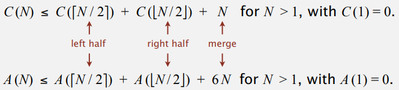
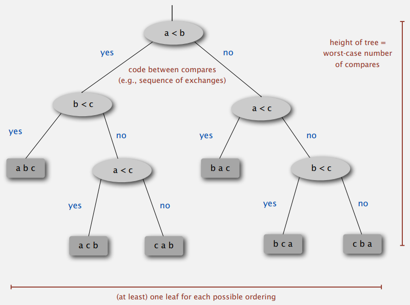
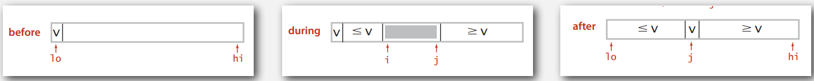
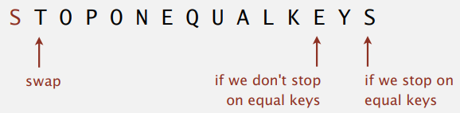
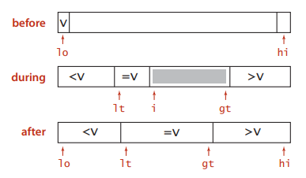
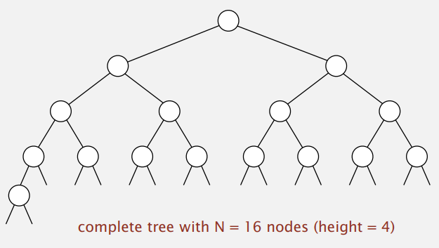

Algorithms I, Princeton University, P2
这是 Algorithms I & II, Princeton 系列笔记的 P2 部分。这一节将介绍：
- \(\sim N\log{N}\) 的经典排序算法——归并排序与快速排序。
- 运用了快排 partition 思想的 \(\sim N\) 快速选择算法。
- 堆，堆排序与优先队列。
This article is a self-administered course note.
It will NOT cover any exam or assignment related content.
Merge Sort
Basic idea of mergesort is divide-and-conquer paradigm.
- Divide array into two halves.
- Recursively sort each half.
- Merge two sorted halves using two pointers.
In empirical analysis of merge sort, # compares is denoted by \(C(N)\), # array accesses is denoted by \(A(N)\). It is proven that \(C(N)\leq N\lg N\) and \(A(N)\leq 6N\lg N\) for any array of size \(N\).

We prove this by induction with base case \(N=1\) and inductive hypothesis \(D(N)=N\lg N\). The goal is to show that \(D(2N)=(2N)\lg(2N)\). \[ \begin{aligned} D(2N)&=2D(N)+2N \\ &= 2N\lg N+2N \\ &= 2N(\lg(2N) - 1)+2N \\ &= 2N\lg (2N) \end{aligned} \]
Mergesort uses extra space proportional to \(N\), which means it is NOT in-place.
Code Implementation
1 | public class Merge { |
Practical Improvements
Use insertion sort for small subarrays.
Mergesort has too much overhead for tiny subarrays. Cutoff to insertion sort for \(\approx 7\) items.
1
2
3
4
5
6
7
8
9
10private static void sort(Comparable[] a, Comparable[] aux, int lo, int hi) {
+ if (hi <= lo + CUTOFF - 1) {
+ Insertion.sort(a, lo, hi);
+ return;
+ }
int mid = lo + (hi - lo) / 2;
sort(a, aux, lo, mid);
sort(a, aux, mid + 1, hi);
merge(a, aux, lo, mid, hi);
}STOP if already sorted. (especially helpful for partially-ordered arrays.)
1
2
3
4
5
6
7
8private static void sort(Comparable[] a, Comparable[] aux, int lo, int hi) {
if (hi <= lo) return;
int mid = lo + (hi - lo) / 2;
sort(a, aux, lo, mid);
sort(a, aux, mid + 1, hi);
+ if (!less(a[mid + 1], a[mid])) return;
merge(a, aux, lo, mid, hi);
}Eliminate the copy to the auxiliary array.
Save time (not space) by switching the role of input and auxiliary array in each recursive call.
Complexity of Sorting
Computational complexity is a framework to study efficiency of algorithms for solving a particular problem \(X\). It consists of five components:
- Model of computation. Allowable operations.
- Cost model. Operation count(s).
- Upper bound. Cost guarantee provided by some algorithms for \(X\).
- Lower bound. Proven limit on cost guarantee by all algorithms for \(X\).
- Optimal algorithm. Algorithm with best possible cost guarantee for \(X\).
We model the complexity of sorting problem as follows:
- Model of computation. Decision trees.
- Cost model. # compares.
- Upper bound. \(\sim N\lg N\) from mergesort.
- Lower bound. ?
- Optimal algorithm. ?
Decision Tree
Decision trees for compare-base sorting algorithms can access information only through compare.

Note that the height of the tree \(h\) \(=\) the worst-case number of compares, and at least each leaf corresponds to a possible ordering of elements.
Lower Bound for Sorting
We prove this by establishing an inequality based on the number of leaves of decision tree.
- Binary tree of height \(h\) has at most \(2^h\) leaves. # leaves \(\leq 2^h\).
- \(N!\) different orderings \(\to\) at least \(N!\) leaves. # leaves \(\geq N!\).
- Worst case dictated by height \(h\) of decision tree.
\(2^h\geq\) # leaves \(\geq N!\Rightarrow h\geq \lg(N!)\). According to the Stirling's formula, \(\lg(N!)\sim N\lg N\).
The lower bound of sorting problem is thus determined by \(h\geq \sim N\lg N\).
We could see that the upper bound and the lower bound overlap each other \((\sim N\lg N)\). Therefore, we could say that mergesort is an optimal algorithm for compare-base sorting problem.
Note that quicksort (stay tuned) is NOT optimal: it needs \(\sim\frac{1}{2}N^2\) compares in the worst case.
Quick Sort
快排，排序算法中的一颗明珠。然而在深入了解之后我才学习到其并不是理论上最优秀的排序算法 (最坏情况下需要 \(N^2\) 规模次数的比较)，是排序前的随机打乱赋予了它概率上的性能保证。
除了随机性的应用之外，它的核心思想——partition 也非常的巧妙，能够在不对数组进行完全排序的前提下获得某个元素
a[lo]排序后的准确下标 \(j\)。
Quick sort is practically (NOT empirically) the fastest sorting algorithm. It has three processes:
- Shuffle the array.
- Partition so that, for some \(j\)
- entry \(a_j\) is in place
- No larger entry to the left of \(j\)
- No smaller entry to the right of \(j\)
- Sort each piece recursively.
Partition
Partition is the essence of quick sort. It finally produces an in-place index \(j\) so that no larger entry to the left of \(j\) and no smaller entry to the right of \(j\).
To achieve this, we maintain two pointers \(i\) and \(j\) as follows:
- Scan \(i\) from left to right so
long as
a[i] < a[lo]. - Scan \(j\) from right to left so
long as
a[j] > a[lo]. - Exchange
a[i]witha[j].
Repeat until \(i\) and \(j\) pointers cross. When it happens,
exchange a[lo] with a[j].

See the Java code for partitioning below:
1 | private static int partition(Comparable[] a, int lo, int hi) { |

Considering an array with all entries having the same key; in this case, algorithm goes quadratic unless partitioning stops on equal keys.
Stopping on equal keys guarantees \(\sim N\lg{N}\) compares when all keys are equal.
However, a more desirable consequence should be that all items equal to the partitioning item are in place. Stay tuned for the 3-way partitioning technique.
Shuffle
The worst case happens when the array is sorted (key is already in order). This will cost quadratic number of compares: \(N+(N-1)+...+1\sim \frac{1}{2}N^2\).
However, giving the array a random shuffle could make the probability of the worst case happening negligible. It is based on a math model that can be validated with experiments.
1 | public class Quick { |
The average number of compares to quicksort an array of \(N\) distinct keys is \(\sim 1.39N\lg{N}\), and the average number of exchange is \(\sim \frac{1}{3}N\lg N\).
Though quicksort has 39% more compares than mergesort, it is faster in practice because of less data movement.
3-way Partitioning
3-way partitioning (3-way quicksort) improves traditional quicksort in presence of duplicate keys.
- It put all items equal to the partitioning item in place.
- It reduces running time from linearithmic to linear in broad class of applications.
3-way quicksort partition array into three parts that:
- Entries between \(lt\) and \(gt\) equal to partition item \(v\).
- No larger entries to left of \(lt\).
- No smaller entries to right of \(gt\).
To achieve this, we maintain three pointers \(lt\), \(gt\), and \(i\) as follows:
Let \(v\) be partitioning item \(a_{lo}\), scanning \(i\) from left to right.
a[i] < v: exchangea[lt]witha[i]; increment bothltandia[i] > v: exchangea[gt]witha[i]; decrementgta[i] == v: incrementi
Repeat until \(i\) and \(gt\) pointers cross.

See the Java code for 3-way partitioning below; it's much simpler than traditional one above:
1 | private static void sort(Comparable[] a, int lo, int hi) { |
It is proven that 3-way quick sort needs only (linear) \(N\) compares when in best case, but it still needs (quadratic) \(\frac{1}{2}N^2\) compares in worst case.
Quick Select
Quick Select 算法实际上应用的是快排中的 partition 思想。找数组第 \(k\) 大的问题居然可以如此优雅的实现，还有着平均线性的优秀时间复杂度，真的令人再次感受到算法的无穷魅力。
The goal of selection problem is, given an array of \(N\) items, find the \(k\)-th smallest item.
A trivial solution is to sort the array, and simply pick the \(k\)-th item. It means we find a \(N\log N\) upper bound for this problem. However, is selection as hard as sorting?
In fact, there is a linear-time quick-select algorithm: we partition the array so that,
- Entry
a[j]is in place. - No larger entry to the left of \(j\).
- No smaller entry to the right of \(j\).
Repeat partitioning in one subarray, depending on \(j\);
k < j: sethitoj - 1, partitioning the left subarray.k > j: setlotoj + 1, partitioning the right subarray.
finished when \(j\) equals \(k\), return a[k].
1 | public static Comparable select(Comparable[] a, int k) { |
Intuitively, each partitioning step splits the array approximately in half: the total number of compares will be \(N+N/2+N/4+...+1\sim 2N\). The formal analysis is similar to quicksort.
Similar to quicksort, quick-select uses quadratic \(\sim 1/2N^2\) compares in the worst case, but the random shuffle provides a probabilistic guarantee.
Just like we use quicksort as a pratical linearithmic-time algorithm; in most cases, we use quick-select as a pratical linear-time algorithm.
Binary Heap
堆是一个很重要的数据结构；它是绝大多数优先队列 (priority queue) 的内部实现；其诞生也使得 \(\sim N\log{N}\) 的 in-place 排序算法成为可能。(堆排序) 但是堆排序仍然无法在日常应用中代替快速排序；它常常需要访问相距较远的地址取值，使得其底层的效率较为低下。
Complete Binary Tree
A binary tree is composed by recursively following the principles:
- It is empty.
- It is a node with links to left and right binary trees.

An important property. Height of the complete binary tree with \(N\) nodes is \(\lfloor \lg{N} \rfloor\).
Heap Properties
A binary heap is a complete binary tree with the following properties:
- Largest key is
a[1], which is the root of binary tree. - Parent's key NO smaller than children's keys.
We often use arrays to represent a heap, it is simple and do not require explicit links.
- Indices start at \(1\).
- Take nodes in level order.
- Can use array indices to move through tree.
- Parent of node at
kisk/2. - Children of node at
kare at2kand2k+1.
- Parent of node at
Promotion and Insertion
Promotion is needed when child's key becomes larger key than its parent's key.
Promotion follows Peter Principle: Node promoted to level of incompetence.
1 | private void swim(int k) { |
This allows us to insert new nodes into a heap; We just add the node at end, then swim it up. It will cost at most \(1+\lg{N}\) compares.
1 | public void insert(Key x) { |
Demotion and Deletion
Demotion is needed when parent's key becomes smaller than one (or both) of its children's.
Demotion shows power struggle: Better subordinate gets promoted.
1 | private void sink(int k) { // top-down reheapify |
This allows us to delete the root (maximum) in a heap; We exchange root with the node at end, then sink it down. It will cost at most \(2\lg N\) compares.
1 | public Key delMax() { |
Construction
A trivial way to build a heap given \(N\) keys is to insert them one by one into an empty heap. However, this will cost \(\sim N\log{N}\) compares and exchanges.
In fact, there is a bottom-up linear-time method to construct a heap out of \(N\) keys.
For a node with links to left subheap and right subheap, we heapify the node by sinking it down. Therefore, from the last second level, we heapify the nodes level by level.
The reason why we start from the last second level is that every single node is a subheap of size \(1\).
1 | // Note that it is a 1-based indexing |
Assume \(S\) is the total number of compares and exchanges. Note that the number of compares and exchanges when heapifying (sinking down) a node is proportional to the its height \(h\).
\(S=2^0h+2^1(h-1)+2^2(h-2)+...+2^k(h-k)+...+2^{h-1}=2^{h+1}-h-2\). The height of heap is \(h=\log{n}\), thus \(S=\sim N\).
Heap Sort
The basic plan for in-place heap sort.
- Construct a max-heap with all \(N\) keys. (linear-time bottom-up heap construction)
- Repeatedly remove the maximum key. (linearithmic-time sorting down process)
See the complete Java code below:
1 | public class Heap { |
The significance of heap sort. In-place sorting algorithm with \(N\log{N}\) worst-case.
- Mergesort: no, linear extra space. (in-place merge possible with high constants, not pratical)
- Quicksort: no, quadratic time in worst case.
- Heapsort: yes! Optimal in both time and space.
However, there is still an unpratical bottom line for heap sort.
- Inner loop longer than quicksort's.
- Makes poor use of cache memory.
- Not stable.
Priority Queues
We've introduced several collections. They all support insert and delete items. What differs them is the item to delete:
- Stack. Remove the item most recently added.
- Queue. Remove the item least recently added.
- Double-ended queue. Remove the item most or least recently added.
- Priority queue. Remove the largest (or smallest) item.
There are two kinds of PQs: elementary PQs (implemented with linked lists or resizing arrays) and heap-based PQs. See the order of growth of running time for PQs with \(N\) items:
| implementation | insert | del max | max |
|---|---|---|---|
| (elementary) unordered array | \(1\) | \(N\) | \(N\) |
| (elementary) ordered array | \(N\) | \(1\) | \(1\) |
| binary heap | \(\log{N}\) | \(\log{N}\) | \(\log{N}\) |
It's natural and efficient to implement PQs with heap. See the complete Java code below:
1 | public class MaxPQ<Key> implements Iterable<Key> { |
Reference
This article is a self-administered course note.
References in the article are from corresponding course materials if not specified.
Course info:
Algorithms, Part 1, Princeton University. Lecturer: Robert Sedgewick & Kevin Wayne.
Course textbook:
Algorithms (4th edition), Sedgewick, R. & Wayne, K., (2011), Addison-Wesley Professional, view